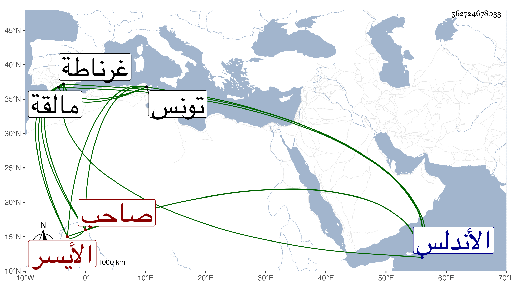

0902Sakhawi.DawLamic.ITO20230111-ara1.EIS1600.562724678033
Biography ID: 562724678033
229
محمد بن نصر بن محمد بن يوسف بن إسماعيل بن فرح بن إسماعيل بن يوسف بن نصر أبو عبد الله الأيسر صاحب غرناطة بالأندلس ويعرف بابن الأحمر وليها مدة إلى أن خلع محمد بن المول ففر إلى مالقة وجمع الناس لحرب ابن المول حتى ملك غرناطة ثانيا ثم ثار عليه محمد بن يوسف بن يوسف بن محمد بن السلطان أبي فارس عبد العزيز فانهزم إلى تونس فأقام في كنف أبي فارس مكرما مبجلا حتى أعيد ثالثا وقتل محمد بن يوسف وذلك في سنة ثمان وثلاثين ومما أنشده لأبي فارس معتذرا عن تخطيه بنيه وإخوته وجلوسه فوقهم حين علمه بهذا :
| إن كنت أخطأت في التخطي | لي من العذر واضح ثناه |
| هيبة مولاي أذهلتني | فلم تر العين ما سواه |
وهو في عقود المقريزي مطول .
